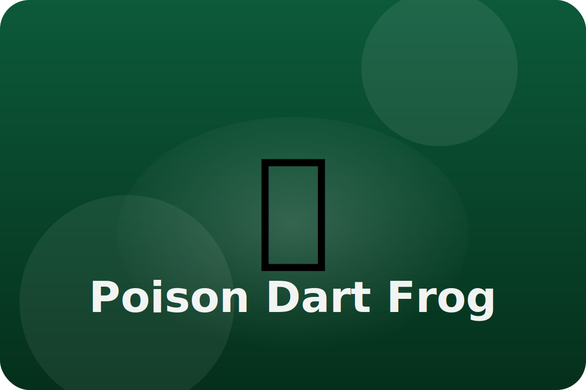

Rainforest
Tiny but tough
Poison dart frogs hop along the rainforest floor. Their bright colors tell other animals to stay away from their strong skin poison.
Warning Colors
The frog's bright yellow, blue, or red skin warns predators that it tastes bad and could make them sick.
Sticky Toes
Tiny sticky pads on its toes help the frog climb wet leaves and branches to stay safe from danger.
Family Care
Poison dart frog parents carry tadpoles on their backs to little pools of water high in plants so the babies can grow.